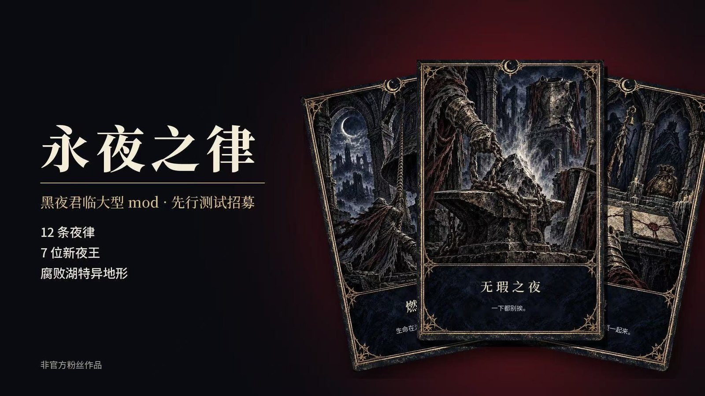
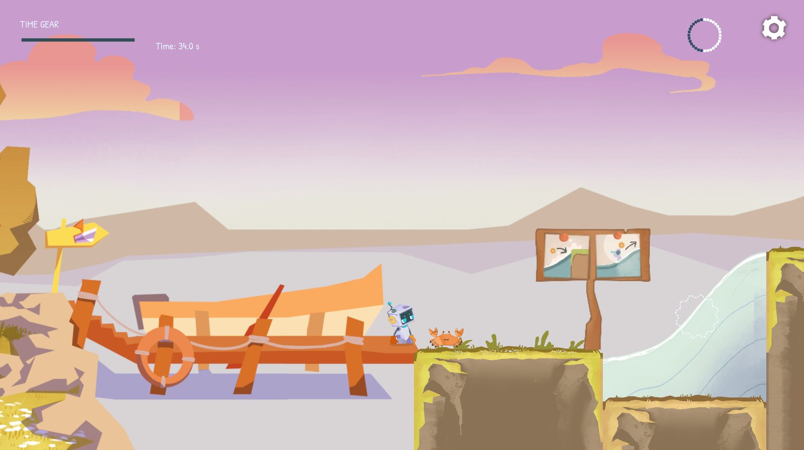
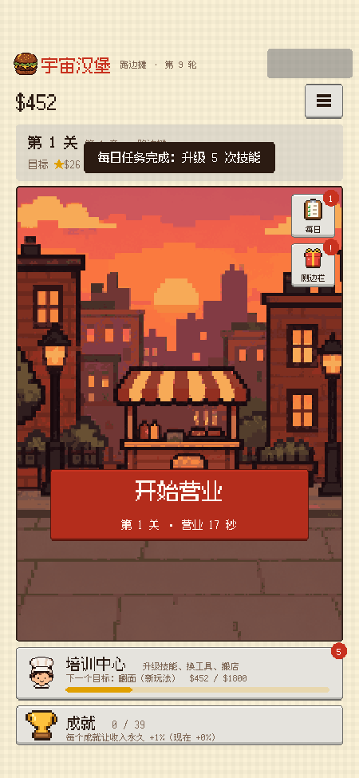
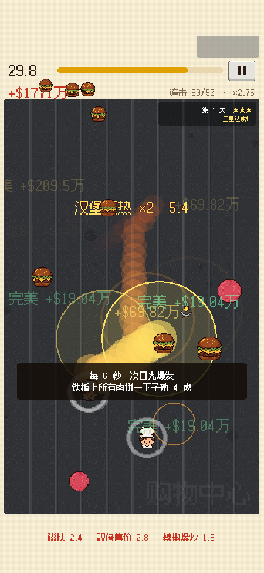
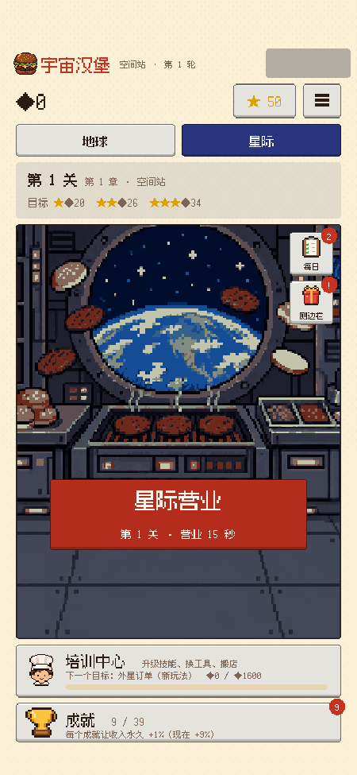
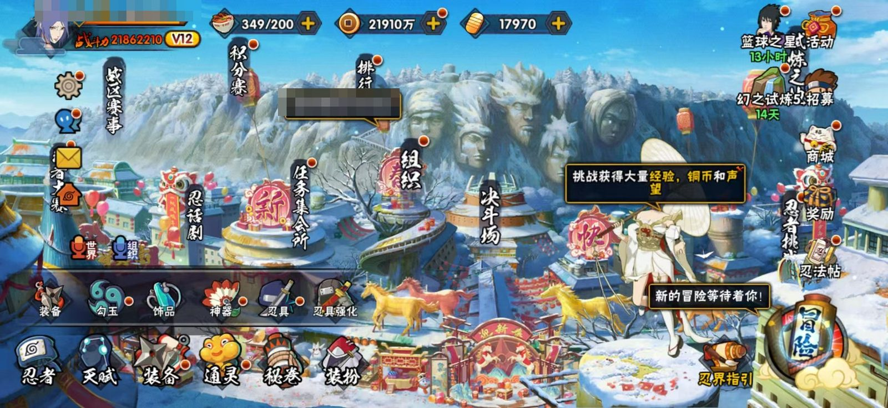
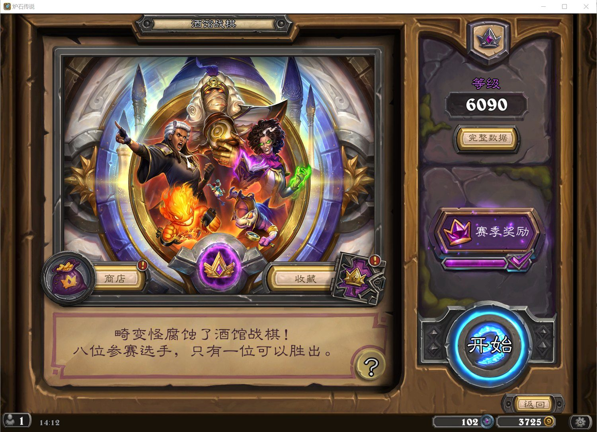

怎么玩HOW TO PLAY
←→移动
空格跳起顶方块
↓在门前进门
点方块直接进
殷硕 · 游戏策划
选择存档
跳起来顶方块也能进入
STATUS
玩家状态
先量化，后实现。独立制作了《黑夜君临》大型 Mod 和抖音小游戏《宇宙汉堡》，在 game jam 担任主策划，写过火影手游、酒馆战棋两份系统拆解。《宇宙汉堡》的节奏和《Tidewheel》的操作窗口，都是先用脚本模拟，再按数据调参。
游戏时长4600h+
白金16 款
Mod 实机迭代80+ 轮
系统拆解56 页
LOAD
读取存档
选择一个存档继续已用存档位 5 / 6
01

黑夜君临 大型内容扩展 Mod

发条人偶 Tidewheel



宇宙汉堡

火影忍者手游 成长与经济系统

酒馆战棋 经济与对局节奏
空存档
↑↓ 选择 · Enter 读取查看简历 ▶